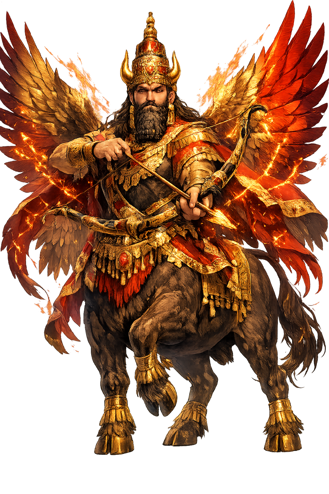

The Authentic Orthography
War, Kingship, Assyrian Patron · National god of Assyria (Akkadian Aššur)

Unicode restoration and ASCII comparison
𒀭𒀸𒋩
The name in its original Mesopotamian form. Aššur (𒀭𒀸𒋩) is attested in the source tradition — “National god of Assyria (Akkadian Aššur)”. Its original diacritics and script distinctions carry the full phonetic and orthographic weight of the source tradition.
ashur
Reduced to plain ashur, the name loses everything that made it specific: original diacritics and script distinctions. What remains is an ASCII string that machines can parse but that no longer speaks with its original voice.
Aššur
The Unicode restoration recovers what ASCII flattened. Aššur restores original diacritics and script distinctions, returning the name to its original written dignity. The domain encodes to Punycode, but the browser displays the truth.
Aššur.com → xn--aur-0zaa.com
The non-ASCII characters in Aššur are encoded while the ASCII remains visible. To the DNS, it is Punycode. To humanity, it is Aššur.
How Aššur travels from ancient script to the modern URL
The name of the Assyrian national god is identical with the city Aššur and probably means “the leading one" or is derived from a mountain/sanctuary name; the god and city were mutually identified.
War, Kingship, Assyrian Patron
The Unicode restoration Aššur preserves vowel length; the cuneiform form is not registrable in .com.
How Aššur was spoken
War, Kingship, Heaven
Aššur is the god who is the nation. His name is identical with the city of Assur, the land of Assyria, and the people who called themselves after both. Unlike Enlīl, whose cosmic kingship was rooted in the air and the Ekur, Aššur's sovereignty travels with the Assyrian army. He is the divine king-maker, the patron of archers and chariots, and the heavenly father who receives the king's report after every campaign.
Assyria itself is his body; to worship Aššur is to belong to the land and its king.
The king fights as Aššur's steward; victory in battle is proof of divine favor and cosmic order.
Identified with Enlīl and Anšar, Aššur becomes the summit of the Mesopotamian pantheon in Assyrian theology.
His house at Assur was rebuilt by every major king; tribute, booty, and prisoners flowed into its treasury.
Stories of Aššur
Aššur's mythology is inseparable from Assyrian royal ideology. The king is his vicar; the empire is his estate; the annual campaign is an act of worship. The stories are told not in narrative epics but in royal inscriptions, temple hymns, and the state theology of a nation at war.
Assyrian scribes produced a version of the Babylonian Enuma Eliš in which Aššur, not Marduk, slays Tiamat and receives the fifty names of kingship. The text transfers cosmic supremacy from Babylon's god to Assyria's god, making Aššur the creator and king of all gods. It is theology as geopolitics, and it worked as long as Assyrian armies were victorious.
Every Assyrian king ruled by Aššur's mandate. Inscriptions open with the formula 'Aššur, the great lord, granted me strength.' The king did not make war for personal glory but to extend the god's territory, punish rebels, and collect tribute for the temple at Assur. Defeat was theological crisis; victory was proof that Aššur's order was universal.
Sennacherib's annals describe the campaign against Judah in 701 BCE as carried out 'with the might of Aššur.' The siege of Lachish and the blockade of Jerusalem were framed as acts of divine discipline against a rebellious vassal. Whether the account is historically exact, it shows how tightly war, piety, and royal propaganda were woven around the god.
The Aššur temple at Assur was rebuilt repeatedly by kings from Eriba-Adad to Sennacherib and Ashurbanipal. Its ziggurat, the 'Steps of Heaven and Earth,' was the symbolic ladder between nation and cosmos. Royal inscriptions record the installation of cedar beams, gold doors, and statues captured from foreign lands — each offering a visible sign that the world was being gathered into Aššur's house.
Aššur is the most political of gods because he is a polity. Other deities have temples; Aššur had an empire. Other gods grant kingship; Aššur granted nationhood. The boundary between worship and statecraft was not blurred in Assyria — it was erased by design. The king was priest, the army was congregation, and the annual campaign was pilgrimage.
Enter Extended Lore